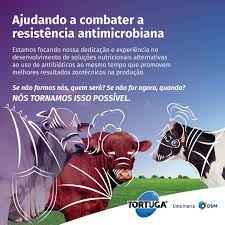
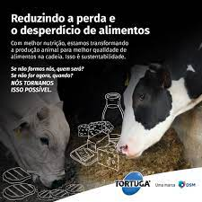
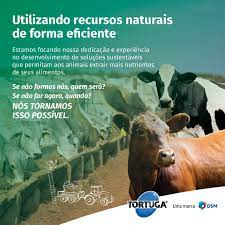

Nosso objetivo é fornecer aos produtores rurais os melhores insumos para aprimorar a nutrição de seus animais, garantindo assim a saúde, o bem-estar e o máximo desempenho de seus rebanhos. Auxiliando-os no manejo nutricional adequado, de acordo com as necessidades específicas de cada animal. Oferecemos todo o suporte necessário aos nossos clientes, desde a escolha dos produtos mais adequados até o acompanhamento continuado do desempenho dos animais. Nosso objetivo é estabelecer uma parceria sólida e duradoura respeitando os nossos pilares base, rentabilidade, confiança e fidelidade, com nossos clientes, sempre visando o sucesso através de resultados concretos.
  Tortuga é uma marca de suplementos nutricionais para gado de corte, gado de leite, equídeos e pequenos ruminantes da dsm-firmenich - empresa mundial baseada na ciência, com atividades nas áreas de saúde, nutrição e materiais. A dsm-firmenich comercializa a linha de produtos Tortuga no Brasil e em 17 países da América Latina, com a exclusiva tecnologia dos Minerais Tortuga, atendendo às exigências de empresários rurais que trabalham na pecuária. Ao associar suas competências em Life Sciences e Materials Sciences, a DSM gera prosperidade, progresso ambiental e avanços sociais para criar valor sustentável para todos os envolvidos simultaneamente. Com a união das duas marcas, dsm-firmenich pretende impulsionar o desenvolvimento do setor agropecuário, que tem o objetivo de unir décadas de conhecimento das duas marcas tradicionais para impulsionar o desenvolvimento no setor agropecuário e criar as fazendas do futuro.